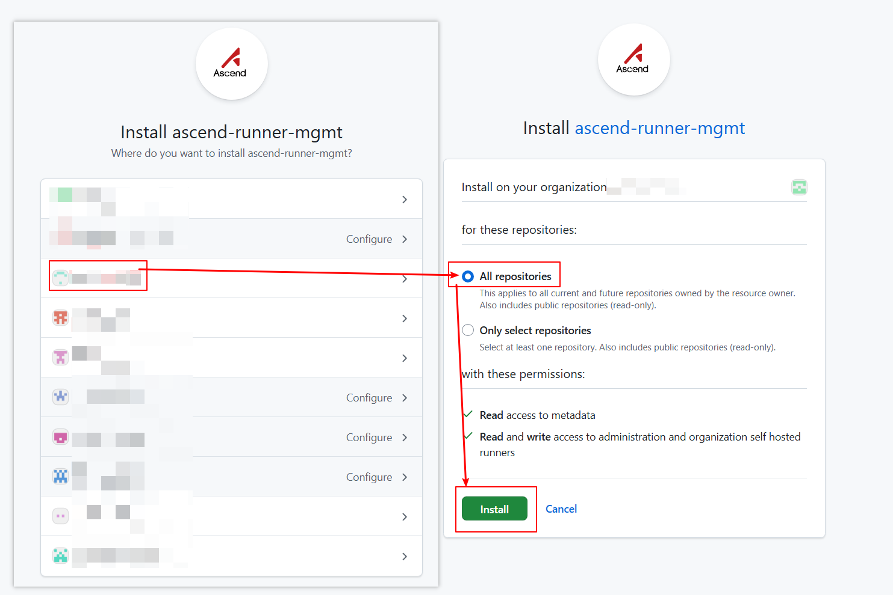
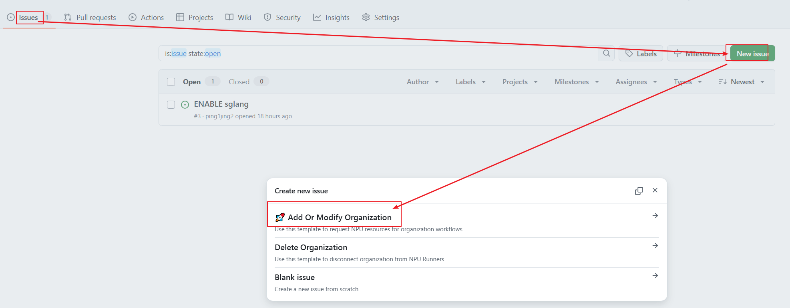
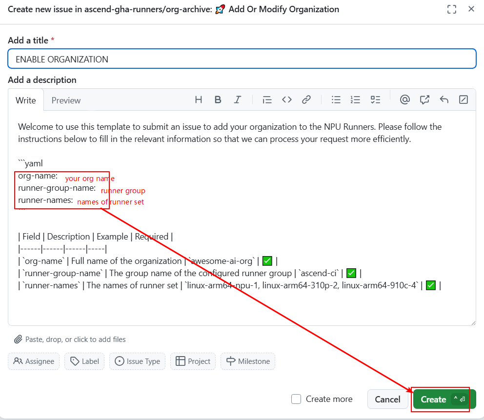
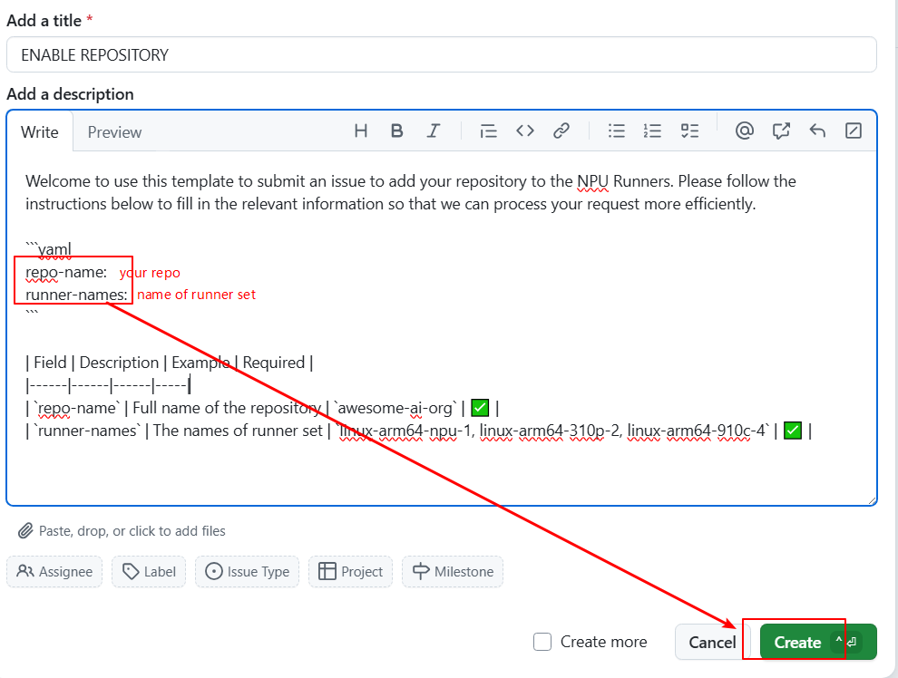
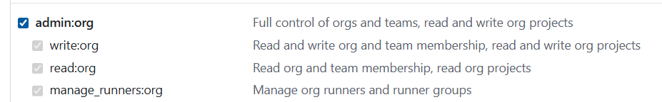
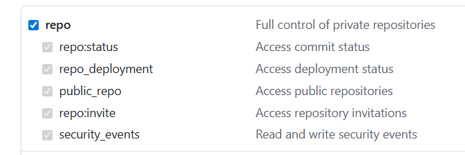
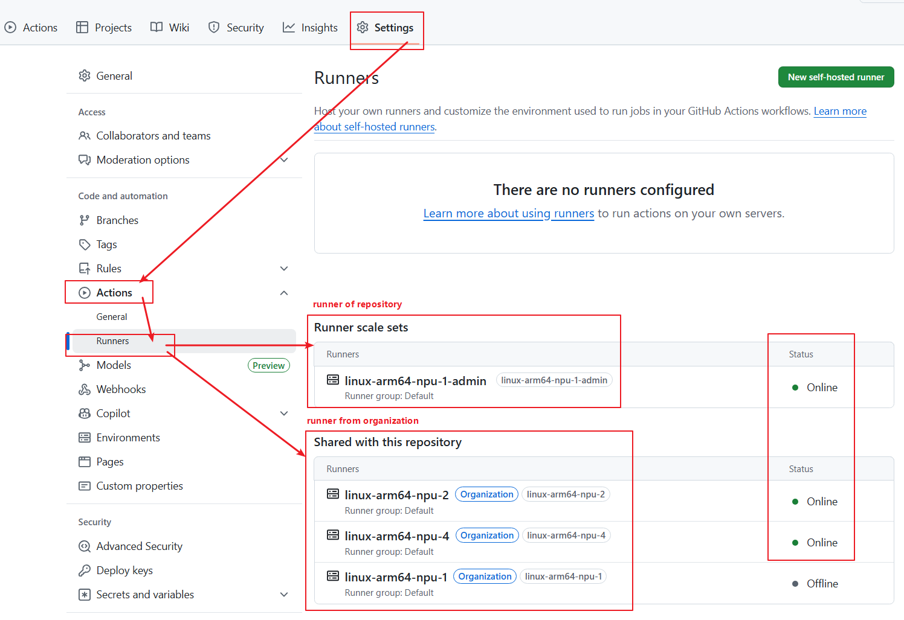

User Manual¶
We implement GitHub Action tasks on Ascend cluster nodes based on ARC.
Runner Pod Types and Naming Methods¶
Ascend clusters create runner pods to execute GitHub Action jobs.We offer the following types of Ascend chips. If no name is specified, the default naming will be applied.
| Type | Architecture | Number of Nodes | Number of chips per Node | Default name(x = chip count) |
|---|---|---|---|---|
| 310P3 | arm64 | 1 | 8 | linux-aarch64-310p-x |
| 910C | arm64 | 2 | 16 | linux-aarch64-910c-x |
| 910B4 | arm64 | 4 | 8 | linux-arm64-npu-x |
| 910B1 | arm64 | 4 | 8 | linux-aarch64-a2-x |
Runner Naming Convention¶
The naming convention for runner pod is composed of the following parts:
linux-amd64-npu-x
^ ^ ^ ^
| | | |
| | | Number of NPUs Available
| | NPU Designator
| Architecture
Operating System
Installation¶
We introduce the installation methods based on the installation scope (organization/repository) and access permissions (GitHub App/PAT). You can choose one method for installation or combine multiple methods.
If you encounter any issues during installation/usage, please create a discussion.
| Organization | Repository | |
|---|---|---|
| GitHub App | Instalation Method | Instalation Method |
| PAT | Instalation Method | Instalation Method |
Install Runner to Organization via GitHub App¶
Prerequisites¶
Requires administrative permissions for the organization.
Optional: Install Runner Group¶
Runners installed at the organization level are managed by runner groups.
Runner groups have three configuration options to control which repository workflows can use the runner:
1. Repositories: All repositories in the organization / Specific repositories.
2. Repository access: private / public.
3. Workflow: All workflows / Specific workflows.
Repositories meeting all three configurations can use the organization’s runners.
If no runner group is specified, the default runner group will be used with the following configurations:
1. Repositories: All repositories selected.
2. Repository access: private.
3. Workflow: All workflows selected.
You may use and modify the default runner group to manage runners (skip Create New Runner Group). If the default runner group is already managing runners with permissions different from the new runners, create a custom runner group (refer to Create New Runner Group).
Install GitHub App¶
Visit apps/ascend-runner-mgmt in your browser and click Install.
 Select the organization, choose
Select the organization, choose All repositories, and click Install.

Submit Request to Activate Organization¶
Visit ascend-gha-runners/org-archive/issues in your browser and click New issue → Add Or Modify Organization template.

Fill in the three configuration parameters and click Create.If you need to customize the runner name, please specify it in your issue.
- org-name: Your organization name.
- runner-group-name: Runner group name (default: Default).
- runner-names: Names of runner set.

Install Runner to Repository via GitHub App¶
Prerequisites¶
Requires administrative permissions for both the organization and repository.
Install GitHub App¶
Visit apps/ascend-runner-mgmt in your browser and click Install.
Select the organization, choose Only select repositories, select your repositories, and click Install.

Submit Request to Activate Repository¶
Visit ascend-gha-runners/org-archive/issues in your browser and click New issue → Add Or Modify Repository template.
 Fill in the two configuration parameters and click
Fill in the two configuration parameters and click Create.If you need to customize the runner name, please specify it in your issue.
- repo-name: Your repository name.
- runner-names: Names of runner set.

Install Runner to Organization via PAT¶
Prerequisites¶
Requires administrative permissions for the organization.
Optional: install runner group¶
Create Token¶
Create a token following GitHub Docs.
Select admin:org for scopes.
Note: After the token expires, the Runner scale set will disappear from the repository, and workflows will fail. Regenerate a valid token when expired.

Submit Request to Activate Organization¶
For token security, send an email to gouzhonglin@huawei.com.If you need to customize the runner name, please specify it in your email.
Email Subject: Request Ascend NPU Runners
Email Content:
repo: https://github.com/my-org/
runner-group: ascend-ci
token: ghp_xxx
expire-at: 30days
runner-names: linux-arm64-npu-1
Install Runner to Repository via PAT¶
Prerequisites¶
Requires administrative permissions for the repository.
Create Token¶
Create a token following GitHub Docs.
Select repo for scopes.
Note: After the token expires, the Runner scale set will disappear from the repository, and workflows will fail. Regenerate a valid token when expired.

Submit Request to Activate Repository¶
For token security, send an email to gouzhonglin@huawei.com.If you need to customize the runner name, please specify it in your email.
Email Subject: Request Ascend NPU Runners
Email Content:
repo: https://github.com/my-org/my-repo
token: ghp_xxx
expire-at: 30days
runner-names: linux-arm64-npu-1
Usage¶
View Runners¶
Whether installed at the repository or organization level, runners are triggered by repository workflows. Navigate to your repository → Settings → Actions → Runners.
- Runner scale set: Runners configured for the repository.
- Shared with this repository: Organization runners accessible to the repository.
Status Online indicates availability.

Use NPU Runners in Workflows¶
To utilize Ascend NPUs in a job, specify the container.image field. Otherwise, NPU resources won’t be allocated to runner pod.
Example Workflow:
name: Test NPU Runner
on:
workflow_dispatch:
jobs:
job_0:
runs-on: linux-arm64-npu-1
container:
image: ascendai/cann:latest
steps:
- name: Show NPU info
run: |
npu-smi info